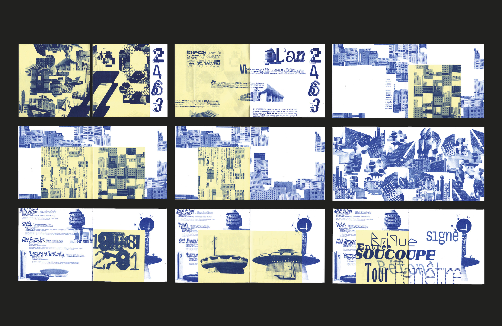

2453 - Futurzine
Édition
Technique : Risographie
Pages : 18 pages
Format : 20 × 20 cm
Collaboration : Ann-May Martin & Patricia Parize
Neuvième édition du Futurzine, une publication collective imaginée dans un futur où le papier a disparu. Elle invite à redécouvrir sa matérialité à travers une expérience ludique et sensorielle où on découpe et recompose les pages. Cette édition explore les architectures futuristes à travers différentes époques.
